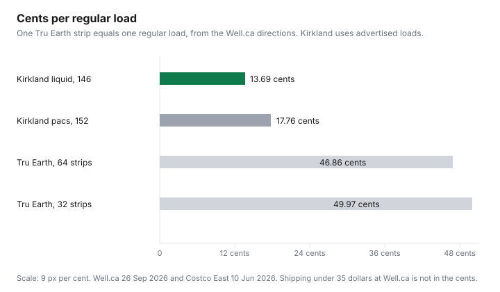

Household Items and Supplies · Canada
Laundry Detergent Sheets in Canada (Tru Earth and Others): Cost per Load and Do They Clean?
Laundry sheets are sold as the jug you no longer have to carry. The question for a household budget is narrower: what does one regular load cost, and what evidence says the sheet cleans the load you actually run. Tru Earth is the Canadian brand whose price loaded. A second and third sheet brand did not. Kirkland liquid and Kirkland pacs did, on a list already used for laundry math.
The jug-and-pod arithmetic is the cost-per-load guide. If a checkout tries to enrol you, the cancel-path guide and the Subscribe and Save guide are the subscription versions of the same trap. Cold water itself is the energy guide.
Disclosure: Laundry sheets sold through Amazon.ca storefronts are an offer type. Saving Optimizer may earn a commission if we later add a partner link. We do not currently claim an Amazon partnership. Education only.
Key takeaways
- Well.ca, checked 26 Sep 2026: Tru Earth strips, 64 count, $29.99. Directions: half a strip for a small load, one for regular, two for extra large. One regular load is 46.86 cents.
- The 32-count box on the same category page was $15.99, which is 49.97 cents a strip.
- Kirkland liquid, 146 washloads at $19.99 on the Costco East list posted 10 Jun 2026, is 13.69 cents an advertised load. Kirkland pacs, 152 at $26.99, are 17.76 cents.
- No independent cleaning test was opened. "Works in all temperatures" is Tru Earth's claim and the Well.ca product text.
- The ingredient list on Well.ca includes polyvinyl alcohol. A missing jug is not the same as a plastic-free sheet.
What laundry sheets are and why Canadians are trying them
A laundry sheet, in Tru Earth's own description on ca.tru.earth and on Well.ca, is a pre-measured strip you toss into the washer instead of pouring from a jug. The Well.ca text calls the formula low-sudsing and safe for high-efficiency machines. The homepage opened 26 Sep 2026 says the sheets are free from parabens, phosphates, phthalates, dyes, and chlorine bleach, and that the packaging is recyclable cardboard. Those are product claims. They explain the appeal: less measuring, less jug storage, a Canadian brand (the site says proudly Canadian) that people see in feeds.
Appeal is not a price. The homepage also showed bundle prices, including a Free and Clear box at $65.89 and other boxes at $80.88 and $89.80, without a strip count in the text that loaded. Those figures are not in the per-load table because a count is required before a division. The counted prices are the Well.ca ones below.
Cost per load vs Kirkland liquid and store-brand pods (CAD table)
Use the directions, not a marketing "loads" number that assumes you tear every strip in half. Well.ca says a small load is half a strip, a regular load is one strip, and an extra-large load is two strips. This table prices one strip as one regular load. Tru Earth, 64 count, $29.99, is $29.99 divided by 64, which is 46.86 cents. The Fresh Linen product page also displayed $25.49 beside $29.99. At $25.49 the strip is 39.83 cents. That lower figure is what the page showed; it is not assumed to be the price after you click through. The 32-count boxes on the category page were $15.99, which is 49.97 cents a strip. Kirkland Signature laundry detergent, 146 washloads, $19.99, on the Costco East list posted 10 Jun 2026, is 13.69 cents per advertised load. Kirkland pacs, 152 at $26.99, are 17.76 cents. A store-brand pod other than Kirkland did not have a price and a count on a page that loaded.
| Product | Price | Count used | Cents per regular load |
|---|---|---|---|
| Kirkland Signature liquid | $19.99 | 146 advertised washloads | 13.69 |
| Kirkland Signature laundry pacs | $26.99 | 152 pacs | 17.76 |
| Tru Earth strips, 64 count | $29.99 | 64 strips, one per regular load | 46.86 |
| Tru Earth strips, 64 count, if the $25.49 figure on the Fresh Linen page is what you pay | $25.49 | 64 strips | 39.83 |
| Tru Earth strips, 32 count | $15.99 | 32 strips | 49.97 |

Well.ca's pages say free shipping at $35 and up. A $29.99 box is under that line, so a shipping charge may be added. The dollar amount of that charge was not printed on the product text that loaded, so it is not in the cents. Tru Earth's homepage advertised free shipping as a member perk. Membership is the next section.
Where sheets underperform: heavy soil, grease, cold-water winter loads
There is no independent test to cite. The honest statement is that evidence opened for this draft is limited to the manufacturer's claims and the dose directions. Those directions already admit that an extra-large load takes two strips. Grease and heavy soil are the loads most likely to need that second strip, or a liquid dose, or a pre-treat. Two strips from the $29.99 box are 93.72 cents, which is several times the Kirkland liquid load. If your laundry is mostly extra-large or greasy, price two strips before you switch.
Cold water is a separate claim. Well.ca says the formula "works in all temps." The Tru Earth product page says "Works in All Temperatures." A Canadian January fill can be close to the temperature of the main. Whether the strip dissolves and lifts soil in that water was not measured on a page opened here. If you are washing cold to save kilowatt-hours, keep the energy saving and judge the sheet by the clothes, not by the slogan. The energy side is the cold-water guide.
Subscription-by-default checkout: how to buy once without auto-ship
On 26 Sep 2026 the Tru Earth homepage promoted a routine that does not run out: "Never run out," member perks, "always free shipping," and "Skip, swap, or cancel anytime." That is subscription language. The Well.ca product pages opened the same day showed a one-time add-to-cart price and did not, in the text retrieved, show a pre-selected delivery schedule. This draft did not place an order, so a default ticked box at Tru Earth checkout was not observed. Do not treat "not observed" as proof the box is absent on the day you buy. Look at the payment step. If a schedule is selected, switch it to a single purchase before you pay.
If you did subscribe, cancel in the account that bills you and keep the confirmation. The steps for a reluctant cancel flow are the dark-patterns guide. Amazon's version of the same default is Subscribe and Save. A free-trial clock, if a sheet brand offers one, still needs the trial checklist. A sheet subscription that costs more per load than the jug is a convenience plan. It is not a discount.
Plastic and shipping-weight trade-offs worth weighing
Tru Earth's homepage says the sheets are 94 percent lighter than liquid detergent and that recyclable cardboard replaces plastic jugs. That weight claim is the company's. It was not re-weighed here. The ingredient list on the Well.ca Fresh Linen page includes polyvinyl alcohol, the film many dissolving sheets use. "No plastic jug" can be true while the strip itself is a plastic polymer that is meant to dissolve. If your reason for switching is plastic, read the ingredients, not only the cardboard box.
Shipping weight cuts the other way. A light box posted to your door can still cost more in fuel and in the shipping fee than a jug you put in a trip you were already making. The $29.99 Well.ca box sits under the $35 free-shipping line printed on those pages. A warehouse jug at $19.99 has no parcel. Weigh the plastic you care about against the cents in the table. Both can be true: less jug plastic, and a higher cost per load.
Who sheets make sense for: small apartments, travel, and laundromat users
Sheets make sense when the jug is the problem. A small apartment that cannot store a 146-load bottle, a trip where you do not want to decant liquid, and a laundromat walk with a pocket strip instead of a jug are format wins. You are paying 46.86 cents, or 39.83 cents if you actually check out at $25.49, for that format. You are not beating 13.69 cents. If two people do a regular load and the jug fits under the sink, the liquid on this list is the cheaper detergent. If you travel four times a year and the rest of the year you use the jug, buy the 32-count once and do not start a schedule.
Sources & date stamps
- Well.ca Tru Earth category and Fresh Linen product page, opened 26 Sep 2026: 64 count listed at $29.99; Fresh Linen page also showed $25.49; 32 count $15.99; directions half strip, one strip, two strips; ingredients include polyvinyl alcohol; free shipping stated at $35 and up.
- ca.tru.earth homepage and Fresh Linen product page, opened 26 Sep 2026: recyclable cardboard, "94% lighter" as the site's claim, works in all temperatures, and "Never run out" with skip, swap, or cancel. Checkout was not completed.
- Costco East cleaning list, posted 10 Jun 2026, opened 26 Sep 2026: Kirkland liquid 146 washloads at $19.99; Kirkland pacs 152 at $26.99.
Frequently asked questions
Are laundry detergent sheets cheaper per load?
Not on the prices opened for this guide. Well.ca on 26 Sep 2026 listed Tru Earth laundry strips, 64 count, at $29.99. The page's directions say one strip for a regular load, which is 46.86 cents. Kirkland Signature liquid on the Costco East list posted 10 Jun 2026 was 13.69 cents per advertised load. A second sheet brand with a one-time Canadian price and a strip count did not load, so it is not in the table.
Do laundry sheets clean as well as liquid?
This draft did not open a named, dated independent test of sheets against liquid on heavy soil or grease. Tru Earth's own pages say the strips work in all temperatures. That is the manufacturer's claim, not a measured result. The Well.ca directions already price a heavier load differently: a small load is half a strip, a regular load is one, and an extra-large load is two. Two strips is 93.72 cents at the $29.99 box.
How do I buy sheets without a subscription?
Buy a single box from a retailer that sells it as a one-time item. Well.ca showed an add-to-cart price, not a subscribe button, on the pages opened 26 Sep 2026. Tru Earth's own homepage that day promoted "Never run out" and the ability to skip, swap, or cancel. This draft did not complete a checkout, so a pre-ticked auto-ship box was not observed. If a box is ticked, untick it before you pay. The cancel path, if you do subscribe, is the dark-patterns guide.
Do sheets work in cold water?
Tru Earth and the Well.ca product text say the strips work in all temperatures, including the phrase "works in all temps" on Well.ca. No independent cold-water test was opened, and a Canadian winter wash is colder at the tap than a mild test. If a cold load comes out short, the honest next step is a second strip or a liquid dose you already priced, not a claim that the sheet failed a study. Washer heat versus the dryer is the cold-water laundry guide.
Who are laundry sheets best for?
People who are paying for convenience and a smaller package, not for the lowest cents per load on these tags. A 64-strip box is easier to store in a small apartment, to pack for travel, and to carry to a laundromat than a 146-load jug. That fit is about format. It does not make 46.86 cents cheaper than 13.69 cents. If the jug fits and you will measure it, the liquid wins on this arithmetic.